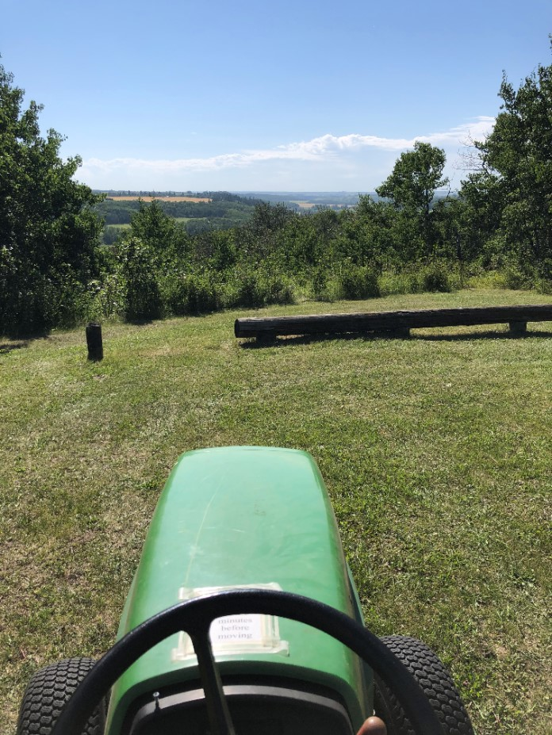
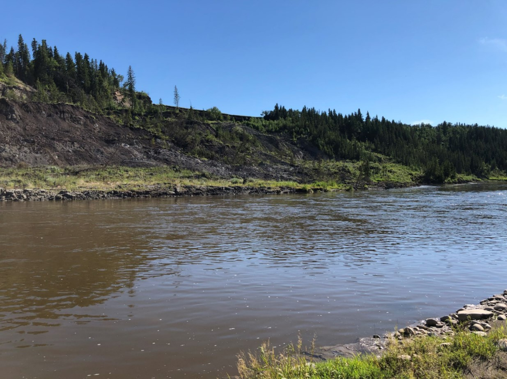
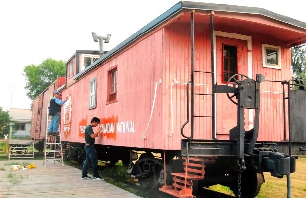
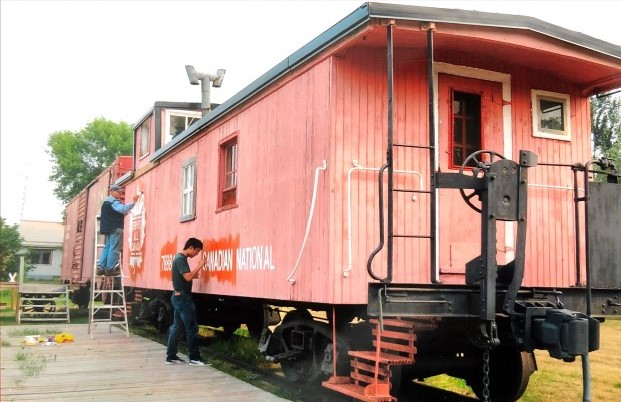
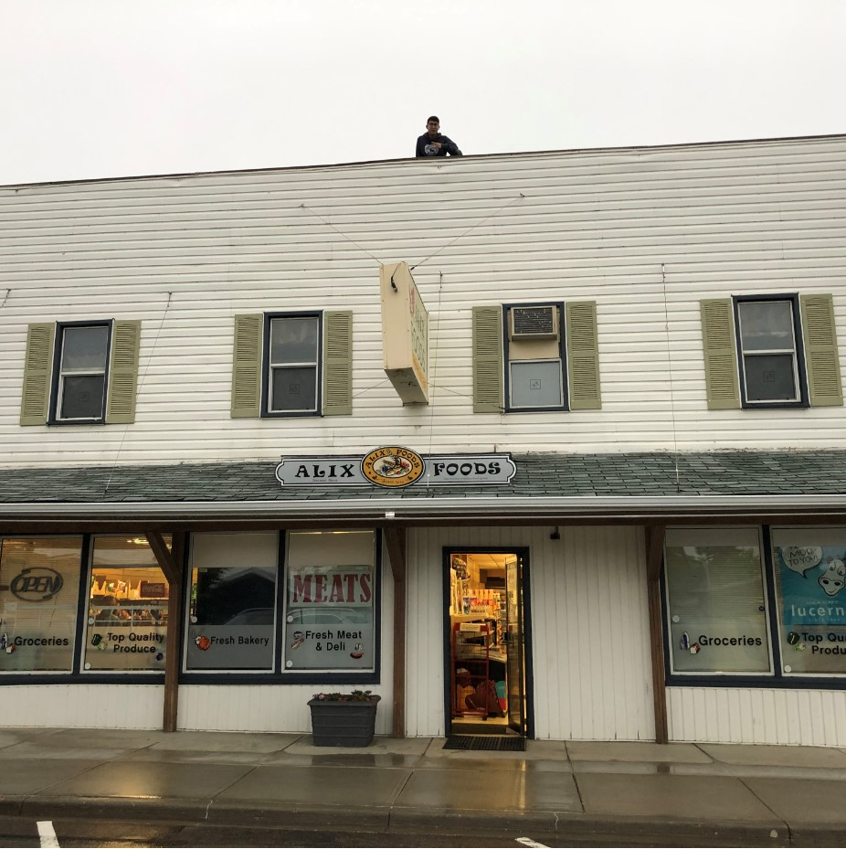

Work Experience
Here's places that I've worked, some pictures, and some references!

Elko Engineering Garage - Technical Assistant
Duration:Winter semester 2022
Summary:
I'm working here part time over the winter 2022 semester.
I'm responsible for making sure the equipment runs well and troubleshooting when things do go wrong.
 
Deer Valley Meadows Camp - Summer Staff Property Team
Duration: Summer 2020, Summer 2021
Summary:
In this role it was my responsibility to manage the property along with the rest of the property team.
Whether it be mowing grass to replacing drywall this position taught me diverse skills.
Notable skills include: Vehicle diagnosis, maintenance & repair, landscaping, and groundskeeping.
 

Mirror and District Museum - Summer Student position
Duration:June 2018 - June 2020
Summary:
I worked here for July and August of 2018, and 2019 as well as June 2020.
My role consisted of doing everything from accessioning donations to maintaining display pieces such as the CN caboose and boxcar on display.
I also on my own initiative set up an end of summer open house for the museum at the end of 2019.
My work during 2020 mostly consisted of office work, maintenance, and giving tours by appointment.

Alix Foods - Grocery Clerk
Duration: Novemeber 2012 - May 2020
Summary:
My family owned the store in Alix, Alberta from 2012 to June 2020, I've been helping out there since I was 12 and had a increasing role in the operations of the business until I left for University.
I kept clocking in when I returned home for breaks and resumed working when school moved online due to Covid-19. This experience taught me how to effectively manage time between work and schoolwork,
and helped me to develop basic knowledge in HVAC and electronics, from watching and helping to fix coolings systems for the various coolers in the store.